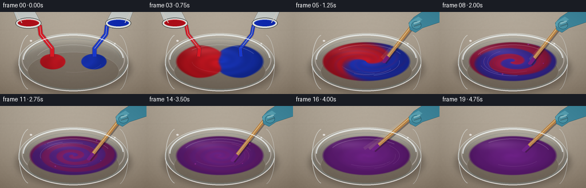
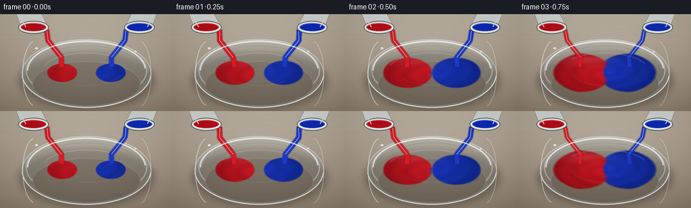

CODING AGENTS AS PIXEL WORLD MODELS
traex/GPT-5.6-Sol · phygen_121
点击播放 · 原生 RGB 像素
逐轮保存的候选
回放视频、检查图与代码变化。
每份候选均可单独播放。实际图片检查记录在下方工具轨迹中。
候选 01播放与检查图
点击播放 · 原生 RGB 像素


展开代码变化
--- 上一保存版本
+++ 本次保存版本
@@ -0,0 +1,247 @@
+from pathlib import Path
+import math
+import json
+import numpy as np
+from PIL import Image, ImageDraw, ImageFilter
+import artifact_io
+
+# Deterministic, text-only procedural animation.
+ROOT = Path(__file__).resolve().parent
+SPEC = json.loads((ROOT / "task_spec.json").read_text())
+W, H, N = SPEC["width"], SPEC["height"], SPEC["frames"]
+S = 3
+WW, HH = W*S, H*S
+rng = np.random.default_rng(121)
+
+def sc(v): return int(round(v*S))
+def pts(seq): return [(sc(x), sc(y)) for x, y in seq]
+def box(b): return tuple(sc(x) for x in b)
+
+def overlay(base, layer):
+ return Image.alpha_composite(base, layer)
+
+def ellipse_layer(bbox, fill, blur=0):
+ im = Image.new("RGBA", (WW, HH), (0,0,0,0))
+ ImageDraw.Draw(im).ellipse(box(bbox), fill=fill)
+ if blur: im = im.filter(ImageFilter.GaussianBlur(sc(blur)))
+ return im
+
+def line(draw, xy, fill, width=1, joint="curve"):
+ draw.line(pts(xy), fill=fill, width=max(1,sc(width)), joint=joint)
+
+def arc(draw, bbox, start, end, fill, width=1):
+ draw.arc(box(bbox), start=start, end=end, fill=fill, width=max(1,sc(width)))
+
+# Fixed tabletop: warm gray workshop surface with fine grain and central light.
+yy, xx = np.mgrid[0:HH, 0:WW]
+X, Y = xx/S, yy/S
+rad = np.sqrt(((X-130)/180)**2 + ((Y-69)/125)**2)
+light = np.clip(1-rad, 0, 1)[...,None]
+top = np.array([176,166,151.], float)
+bot = np.array([137,124,108.], float)
+bg = top[None,None,:]*(1-Y[...,None]/H) + bot[None,None,:]*(Y[...,None]/H)
+bg += 17*light
+# Smoothed, restrained material noise.
+noise = rng.normal(0, 1, (HH,WW))
+noise_im = Image.fromarray(np.uint8(np.clip(noise*28+128,0,255))).filter(ImageFilter.GaussianBlur(sc(.8)))
+noise2 = (np.asarray(noise_im).astype(float)-128)[...,None]*0.12
+bg = np.clip(bg + noise2,0,255).astype(np.uint8)
+BG = Image.fromarray(bg, "RGB").convert("RGBA")
+# Static seams and scratches.
+grain = Image.new("RGBA", (WW,HH), (0,0,0,0)); gd=ImageDraw.Draw(grain)
+for y0, a in [(31,24),(106,20),(132,15)]:
+ line(gd, [(0,y0),(256,y0+0.7)], (84,73,62,a), .55)
+for i in range(18):
+ x0=float(rng.uniform(0,256)); y0=float(rng.uniform(3,141)); ln=float(rng.uniform(8,40))
+ line(gd, [(x0,y0),(min(256,x0+ln),y0+rng.uniform(-.6,.6))], (235,226,207,int(rng.integers(4,12))), .35)
+BG = overlay(BG, grain)
+
+# High-resolution coordinate grids used for the liquid.
+cx, cy, rx, ry = 128., 87., 77., 34.5
+u=(X-cx)/rx; v=(Y-cy)/ry
+rr=np.sqrt(u*u+v*v); th=np.arctan2(v,u)
+surface_aa=np.clip((1.015-rr)*18,0,1)
+
+RED=np.array([205.,24.,35.]); BLUE=np.array([25.,54.,190.]); PURPLE=np.array([113.,35.,139.])
+
+def paint_image(frame):
+ """Pigment advection: equal halves are wound into thinner spirals and diffuse to violet."""
+ if frame <= 3:
+ # Two simultaneously growing equal-volume pools.
+ grow=[.49,.64,.80,1.02][frame]
+ lx=(X-92)/(47*grow); ly=(Y-87)/(29*grow)
+ bx=(X-164)/(47*grow); by=(Y-87)/(29*grow)
+ occ=np.maximum(np.clip((1-np.sqrt(lx*lx+ly*ly))*13,0,1),
+ np.clip((1-np.sqrt(bx*bx+by*by))*13,0,1))
+ occ*=surface_aa
+ boundary=(X-cx) + 2.0*np.sin((Y-cy)*.23+frame*.6)
+ c=.5-.5*np.tanh(boundary/2.1) # red fraction
+ mix=0.0
+ else:
+ occ=surface_aa
+ q=frame-4
+ # Differential angular velocity makes a genuine two-arm spiral from the initial halves.
+ winding=(q*.78)*(1.10-np.clip(rr,0,1))**1.32*math.pi
+ back=th-winding + .13*np.sin(3*th+q*.8)*(1-np.clip(rr,0,1))
+ raw=.5-.5*np.tanh(4.0*np.cos(back))
+ # Fine folded filaments after vigorous repeated stirring.
+ raw += .105*np.sin(7*back+13*rr-q*1.3)*np.exp(-((rr-.58)/.34)**2)
+ raw=np.clip(raw,0,1)
+ # Progressive pigment diffusion; last frames are completely homogeneous.
+ mix_curve={4:.02,5:.045,6:.09,7:.15,8:.23,9:.32,10:.42,11:.53,
+ 12:.64,13:.74,14:.82,15:.89,16:.94,17:.975,18:1.0,19:1.0}
+ mix=mix_curve[frame]
+ c=.5+(raw-.5)*(1-mix)
+ linear=RED[None,None,:]*c[...,None]+BLUE[None,None,:]*(1-c[...,None])
+ # Subtractive mixing yields a richer violet than simple emitted-light averaging.
+ color=linear*(1-mix)+PURPLE[None,None,:]*mix
+ # Bowl curvature, liquid depth, and a rotating low-amplitude surface wave.
+ edge=np.clip((1-rr),0,1)
+ shade=.72+.25*edge
+ wave=1 + .035*np.sin(18*rr-2.0*frame+2*th)*(1-mix*.7)
+ color=color*shade[...,None]*wave[...,None]
+ # Soft overhead reflection in upper-left of the wet paint.
+ gloss=np.exp(-(((X-97)/42)**2+((Y-67)/8.5)**2))*22
+ color+=gloss[...,None]
+ alpha=np.uint8(np.clip(occ*255,0,255))
+ out=np.zeros((HH,WW,4),dtype=np.uint8)
+ out[...,:3]=np.uint8(np.clip(color,0,255)); out[...,3]=alpha
+ return Image.fromarray(out,"RGBA"), mix
+
+def draw_bowl_back(base):
+ # Soft oval cast shadow and translucent glass body behind liquid.
+ shadow=ellipse_layer((28,55,229,142),(40,28,21,80),5.0)
+ base=overlay(base,shadow)
+ glass=Image.new("RGBA",(WW,HH),(0,0,0,0)); d=ImageDraw.Draw(glass)
+ d.ellipse(box((32,37,224,139)), fill=(177,206,213,30), outline=(239,248,250,115), width=sc(1.4))
+ d.ellipse(box((38,40,218,128)), outline=(255,255,255,92), width=sc(2.0))
+ # subtle glass bottom visible under the liquid
+ d.ellipse(box((48,70,208,137)), fill=(79,91,93,19), outline=(225,242,245,38), width=sc(.9))
+ return overlay(base,glass)
+
+def draw_bowl_front(base):
+ # Highlights and front wall, drawn over the paint to read as a glass vessel.
+ gl=Image.new("RGBA",(WW,HH),(0,0,0,0)); d=ImageDraw.Draw(gl)
+ arc(d,(32,37,224,139),4,176,(255,255,255,150),1.7)
+ arc(d,(34,40,222,136),9,171,(119,153,163,115),1.1)
+ arc(d,(40,39,216,128),180,356,(244,253,255,176),2.0)
+ arc(d,(45,47,211,124),184,355,(87,113,122,85),.8)
+ # vertical side glints
+ arc(d,(33,39,73,137),103,257,(245,253,255,120),1.3)
+ arc(d,(187,39,224,138),282,76,(240,251,255,95),1.0)
+ # Bright rim pin lights.
+ d.ellipse(box((52,49,56,52)),fill=(255,255,255,180))
+ d.ellipse(box((199,54,202,57)),fill=(255,255,255,130))
+ return overlay(base,gl)
+
+def add_liquid_details(base, frame, mix):
+ det=Image.new("RGBA",(WW,HH),(0,0,0,0)); d=ImageDraw.Draw(det)
+ # Wet reflection curves track the rotating surface but fade as it settles.
+ phase=frame*23
+ arc(d,(62,57,194,113),198+phase%45,310+phase%45,(255,255,255,43),1.2)
+ arc(d,(79,65,179,106),18+phase%70,105+phase%70,(248,226,255,28),.75)
+ if 5 <= frame <= 16:
+ # Elliptical wakes communicate fast circular motion.
+ strength=int(78*(1-mix*.55))
+ for k in range(3):
+ inset=k*7
+ arc(d,(70+inset,62+inset*.28,186-inset,112-inset*.22),
+ 210+frame*29+k*38, 292+frame*29+k*38,(246,221,251,max(12,strength-k*14)),.8)
+ return overlay(base,det)
+
+def draw_pour(base, frame):
+ """Two matching cups and streams; geometry is mirrored to stress equal amounts."""
+ lay=Image.new("RGBA",(WW,HH),(0,0,0,0)); d=ImageDraw.Draw(lay)
+ # streams behind the vessel rim, equal widths and lengths
+ thin=[7.0,7.4,7.0,5.8,2.4][frame]
+ wob=math.sin(frame*1.7)*1.6
+ for side,col in [(-1,(218,25,37,255)),(1,(25,57,205,255))]:
+ xlip=69 if side<0 else 187
+ xtarget=91 if side<0 else 165
+ # dark edge, then colored glossy core
+ path=[(xlip,23),(xlip-side*2+wob*side,39),(xtarget+side*wob,64),(xtarget,78)]
+ line(d,path,(58,23,37,85),thin+2)
+ line(d,path,col,thin)
+ line(d,[(xlip-side*.8,25),(xlip-side*2+wob*side,39),(xtarget+side*wob,64)],(255,149,166,75) if side<0 else (133,168,255,70),1.1)
+ if frame==4:
+ d.ellipse(box((xtarget-2,80,xtarget+2,84)),fill=col)
+ # Tilted metal paint cups. They are near-mirror images.
+ # left body
+ d.polygon(pts([(22,-5),(60,-3),(72,20),(62,29),(32,21)]),fill=(202,207,204,255),outline=(78,82,81,255))
+ d.ellipse(box((27,10,72,29)),fill=(225,229,225,255),outline=(74,76,75,255),width=sc(1))
+ d.ellipse(box((31,13,68,25)),fill=(178,20,31,255))
+ arc(d,(31,13,68,25),190,350,(255,104,112,200),1.0)
+ # right body
+ d.polygon(pts([(234,-5),(196,-3),(184,20),(194,29),(224,21)]),fill=(202,207,204,255),outline=(78,82,81,255))
+ d.ellipse(box((184,10,229,29)),fill=(225,229,225,255),outline=(74,76,75,255),width=sc(1))
+ d.ellipse(box((188,13,225,25)),fill=(20,46,178,255))
+ arc(d,(188,13,225,25),190,350,(109,142,255,190),1.0)
+ # metallic highlights
+ line(d,[(28,0),(38,19)],(255,255,255,125),1.2); line(d,[(228,0),(218,19)],(255,255,255,125),1.2)
+ return overlay(base,lay)
+
+def draw_stirrer(base, frame, mix):
+ lay=Image.new("RGBA",(WW,HH),(0,0,0,0)); d=ImageDraw.Draw(lay)
+ q=frame-5
+ speed_phase=q*2.18
+ # Immersed tip follows an ellipse inside the bowl.
+ tx=128+31*math.cos(speed_phase)
+ ty=87+12*math.sin(speed_phase)
+ hx=218+2*math.sin(q*.45); hy=11
+ # Two faint prior positions form restrained motion blur.
+ if frame <= 16:
+ for lag,alpha in [(.25,24),(.12,42)]:
+ px=128+31*math.cos(speed_phase-lag*2.18)
+ py=87+12*math.sin(speed_phase-lag*2.18)
+ line(d,[(hx,hy),(px,py)],(248,220,163,alpha),5.5)
+ # shadow, wooden stick, and bright edge
+ line(d,[(hx+1,hy+2),(tx+1,ty+2)],(34,21,22,95),7.2)
+ line(d,[(hx,hy),(tx,ty)],(185,132,73,255),6.0)
+ line(d,[(hx-1,hy),(tx-1,ty)],(243,199,125,190),1.25)
+ # paint-coated submerged tip
+ coat=tuple(int(x) for x in ((1-mix)*np.array([120,28,120])+mix*PURPLE))+(245,)
+ line(d,[(tx+(hx-tx)*.12,ty+(hy-ty)*.12),(tx,ty)],coat,6.4)
+ # small bead at the tip
+ d.ellipse(box((tx-3.4,ty-2.3,tx+3.4,ty+2.3)),fill=coat)
+ # Blue nitrile glove holding the upper end; cuff enters from edge.
+ d.polygon(pts([(256,-3),(229,-3),(211,9),(202,19),(204,31),(214,36),(226,28),(256,18)]),
+ fill=(69,139,160,255),outline=(31,76,91,255))
+ d.polygon(pts([(219,8),(204,17),(202,23),(208,27),(219,18),(226,13)]),fill=(92,164,181,255))
+ d.ellipse(box((207,16,224,30)),fill=(80,151,169,255),outline=(35,90,105,255),width=sc(.8))
+ # fingers wrapping over the stick
+ line(d,[(211,20),(222,16)],(132,193,204,230),3.0)
+ line(d,[(211,25),(223,21)],(48,112,130,210),2.2)
+ # splash flecks only at peak vigorous stirring; remain inside/near rim.
+ if 6 <= frame <= 14:
+ col=(142,43,145,190)
+ for k in range(4):
+ ang=speed_phase+k*1.63
+ sx=128+(55+3*k)*math.cos(ang)
+ sy=84+(24+2*k)*math.sin(ang)
+ r=.7+(k%2)*.55
+ d.ellipse(box((sx-r,sy-r,sx+r,sy+r)),fill=col)
+ return overlay(base,lay)
+
+frames=[]
+for f in range(N):
+ im=BG.copy()
+ im=draw_bowl_back(im)
+ paint,mix=paint_image(f)
+ im=overlay(im,paint)
+ im=add_liquid_details(im,f,mix)
+ if f<=4:
+ im=draw_pour(im,f)
+ else:
+ im=draw_stirrer(im,f,mix)
+ im=draw_bowl_front(im)
+ # Slight foreground vignette focuses the action without dimming the paint.
+ vig=np.clip(((X-128)/190)**2+((Y-72)/130)**2,0,1)*20
+ arr=np.asarray(im.convert("RGB")).astype(np.int16)
+ arr=np.uint8(np.clip(arr-vig[...,None],0,255))
+ small=Image.fromarray(arr,"RGB").resize((W,H),Image.Resampling.LANCZOS)
+ frames.append(np.asarray(small,dtype=np.uint8))
+
+frames=np.stack(frames,axis=0)
+assert frames.shape==(N,H,W,3) and frames.dtype==np.uint8
+artifact_io.save(frames,ROOT)
+print(f"saved {frames.shape} RGB frames; range={frames.min()}..{frames.max()}")
可观测工具轨迹
实际执行的命令与返回图片。
命令 1exit 0
/bin/bash -lc "cat prompt.txt && printf '\\n--- GENERATION_RULES.md ---\\n' && cat GENERATION_RULES.md"
命令 2exit 0
/bin/bash -lc "printf '%s\\n' '--- task_spec.json ---' && cat task_spec.json && printf '%s\\n' '--- files ---' && find . -maxdepth 2 -type f -printf '%p %s bytes\\n' | sort"
命令 3exit 0
/bin/bash -lc "sed -n '1,240p' artifact_io.py"
命令 4exit 0
/bin/bash -lc "cat > generate.py <<'PY'
from pathlib import Path
import math
import json
import numpy as np
from PIL import Image, ImageDraw, ImageFilter
import artifact_io
# Deterministic, text-only procedural animation.
ROOT = Path(__file__).resolve().parent
SPEC = json.loads((ROOT / \"task_spec.json\").read_text())
W, H, N = SPEC[\"width\"], SPEC[\"height\"], SPEC[\"frames\"]
S = 3
WW, HH = W*S, H*S
rng = np.random.default_rng(121)
def sc(v): return int(round(v*S))
def pts(seq): return [(sc(x), sc(y)) for x, y in seq]
def box(b): return tuple(sc(x) for x in b)
def overlay(base, layer):
return Image.alpha_composite(base, layer)
def ellipse_layer(bbox, fill, blur=0):
im = Image.new(\"RGBA\", (WW, HH), (0,0,0,0))
ImageDraw.Draw(im).ellipse(box(bbox), fill=fill)
if blur: im = im.filter(ImageFilter.GaussianBlur(sc(blur)))
return im
def line(draw, xy, fill, width=1, joint=\"curve\"):
draw.line(pts(xy), fill=fill, width=max(1,sc(width)), joint=joint)
def arc(draw, bbox, start, end, fill, width=1):
draw.arc(box(bbox), start=start, end=end, fill=fill, width=max(1,sc(width)))
# Fixed tabletop: warm gray workshop surface with fine grain and central light.
yy, xx = np.mgrid[0:HH, 0:WW]
X, Y = xx/S, yy/S
rad = np.sqrt(((X-130)/180)**2 + ((Y-69)/125)**2)
light = np.clip(1-rad, 0, 1)[...,None]
top = np.array([176,166,151.], float)
bot = np.array([137,124,108.], float)
bg = top[None,None,:]*(1-Y[...,None]/H) + bot[None,None,:]*(Y[...,None]/H)
bg += 17*light
# Smoothed, restrained material noise.
noise = rng.normal(0, 1, (HH,WW))
noise_im = Image.fromarray(np.uint8(np.clip(noise*28+128,0,255))).filter(ImageFilter.GaussianBlur(sc(.8)))
noise2 = (np.asarray(noise_im).astype(float)-128)[...,None]*0.12
bg = np.clip(bg + noise2,0,255).astype(np.uint8)
BG = Image.fromarray(bg, \"RGB\").convert(\"RGBA\")
# Static seams and scratches.
grain = Image.new(\"RGBA\", (WW,HH), (0,0,0,0)); gd=ImageDraw.Draw(grain)
for y0, a in [(31,24),(106,20),(132,15)]:
line(gd, [(0,y0),(256,y0+0.7)], (84,73,62,a), .55)
for i in range(18):
x0=float(rng.uniform(0,256)); y0=float(rng.uniform(3,141)); ln=float(rng.uniform(8,40))
line(gd, [(x0,y0),(min(256,x0+ln),y0+rng.uniform(-.6,.6))], (235,226,207,int(rng.integers(4,12))), .35)
BG = overlay(BG, grain)
# High-resolution coordinate grids used for the liquid.
cx, cy, rx, ry = 128., 87., 77., 34.5
u=(X-cx)/rx; v=(Y-cy)/ry
rr=np.sqrt(u*u+v*v); th=np.arctan2(v,u)
surface_aa=np.clip((1.015-rr)*18,0,1)
RED=np.array([205.,24.,35.]); BLUE=np.array([25.,54.,190.]); PURPLE=np.array([113.,35.,139.])
def paint_image(frame):
\"\"\"Pigment advection: equal halves are wound into thinner spirals and diffuse to violet.\"\"\"
if frame <= 3:
# Two simultaneously growing equal-volume pools.
grow=[.49,.64,.80,1.02][frame]
lx=(X-92)/(47*grow); ly=(Y-87)/(29*grow)
bx=(X-164)/(47*grow); by=(Y-87)/(29*grow)
occ=np.maximum(np.clip((1-np.sqrt(lx*lx+ly*ly))*13,0,1),
np.clip((1-np.sqrt(bx*bx+by*by))*13,0,1))
occ*=surface_aa
boundary=(X-cx) + 2.0*np.sin((Y-cy)*.23+frame*.6)
c=.5-.5*np.tanh(boundary/2.1) # red fraction
mix=0.0
else:
occ=surface_aa
q=frame-4
# Differential angular velocity makes a genuine two-arm spiral from the initial halves.
winding=(q*.78)*(1.10-np.clip(rr,0,1))**1.32*math.pi
back=th-winding + .13*np.sin(3*th+q*.8)*(1-np.clip(rr,0,1))
raw=.5-.5*np.tanh(4.0*np.cos(back))
# Fine folded filaments after vigorous repeated stirring.
raw += .105*np.sin(7*back+13*rr-q*1.3)*np.exp(-((rr-.58)/.34)**2)
raw=np.clip(raw,0,1)
# Progressive pigment diffusion; last frames are completely homogeneous.
mix_curve={4:.02,5:.045,6:.09,7:.15,8:.23,9:.32,10:.42,11:.53,
12:.64,13:.74,14:.82,15:.89,16:.94,17:.975,18:1.0,19:1.0}
mix=mix_curve[frame]
c=.5+(raw-.5)*(1-mix)
linear=RED[None,None,:]*c[...,None]+BLUE[None,None,:]*(1-c[...,None])
# Subtractive mixing yields a richer violet than simple emitted-light averaging.
color=linear*(1-mix)+PURPLE[None,None,:]*mix
# Bowl curvature, liquid depth, and a rotating low-amplitude surface wave.
edge=np.clip((1-rr),0,1)
shade=.72+.25*edge
wave=1 + .035*np.sin(18*rr-2.0*frame+2*th)*(1-mix*.7)
color=color*shade[...,None]*wave[...,None]
# Soft overhead reflection in upper-left of the wet paint.
gloss=np.exp(-(((X-97)/42)**2+((Y-67)/8.5)**2))*22
color+=gloss[...,None]
alpha=np.uint8(np.clip(occ*255,0,255))
out=np.zeros((HH,WW,4),dtype=np.uint8)
out[...,:3]=np.uint8(np.clip(color,0,255)); out[...,3]=alpha
return Image.fromarray(out,\"RGBA\"), mix
def draw_bowl_back(base):
# Soft oval cast shadow and translucent glass body behind liquid.
shadow=ellipse_layer((28,55,229,142),(40,28,21,80),5.0)
base=overlay(base,shadow)
glass=Image.new(\"RGBA\",(WW,HH),(0,0,0,0)); d=ImageDraw.Draw(glass)
d.ellipse(box((32,37,224,139)), fill=(177,206,213,30), outline=(239,248,250,115), width=sc(1.4))
d.ellipse(box((38,40,218,128)), outline=(255,255,255,92), width=sc(2.0))
# subtle glass bottom visible under the liquid
d.ellipse(box((48,70,208,137)), fill=(79,91,93,19), outline=(225,242,245,38), width=sc(.9))
return overlay(base,glass)
def draw_bowl_front(base):
# Highlights and front wall, drawn over the paint to read as a glass vessel.
gl=Image.new(\"RGBA\",(WW,HH),(0,0,0,0)); d=ImageDraw.Draw(gl)
arc(d,(32,37,224,139),4,176,(255,255,255,150),1.7)
arc(d,(34,40,222,136),9,171,(119,153,163,115),1.1)
arc(d,(40,39,216,128),180,356,(244,253,255,176),2.0)
arc(d,(45,47,211,124),184,355,(87,113,122,85),.8)
# vertical side glints
arc(d,(33,39,73,137),103,257,(245,253,255,120),1.3)
arc(d,(187,39,224,138),282,76,(240,251,255,95),1.0)
# Bright rim pin lights.
d.ellipse(box((52,49,56,52)),fill=(255,255,255,180))
d.ellipse(box((199,54,202,57)),fill=(255,255,255,130))
return overlay(base,gl)
def add_liquid_details(base, frame, mix):
det=Image.new(\"RGBA\",(WW,HH),(0,0,0,0)); d=ImageDraw.Draw(det)
# Wet reflection curves track the rotating surface but fade as it settles.
phase=frame*23
arc(d,(62,57,194,113),198+phase%45,310+phase%45,(255,255,255,43),1.2)
arc(d,(79,65,179,106),18+phase%70,105+phase%70,(248,226,255,28),.75)
if 5 <= frame <= 16:
# Elliptical wakes communicate fast circular motion.
strength=int(78*(1-mix*.55))
for k in range(3):
inset=k*7
arc(d,(70+inset,62+inset*.28,186-inset,112-inset*.22),
210+frame*29+k*38, 292+frame*29+k*38,(246,221,251,max(12,strength-k*14)),.8)
return overlay(base,det)
def draw_pour(base, frame):
\"\"\"Two matching cups and streams; geometry is mirrored to stress equal amounts.\"\"\"
lay=Image.new(\"RGBA\",(WW,HH),(0,0,0,0)); d=ImageDraw.Draw(lay)
# streams behind the vessel rim, equal widths and lengths
thin=[7.0,7.4,7.0,5.8,2.4][frame]
wob=math.sin(frame*1.7)*1.6
for side,col in [(-1,(218,25,37,255)),(1,(25,57,205,255))]:
xlip=69 if side<0 else 187
xtarget=91 if side<0 else 165
# dark edge, then colored glossy core
path=[(xlip,23),(xlip-side*2+wob*side,39),(xtarget+side*wob,64),(xtarget,78)]
line(d,path,(58,23,37,85),thin+2)
line(d,path,col,thin)
line(d,[(xlip-side*.8,25),(xlip-side*2+wob*side,39),(xtarget+side*wob,64)],(255,149,166,75) if side<0 else (133,168,255,70),1.1)
if frame==4:
d.ellipse(box((xtarget-2,80,xtarget+2,84)),fill=col)
# Tilted metal paint cups. They are near-mirror images.
# left body
d.polygon(pts([(22,-5),(60,-3),(72,20),(62,29),(32,21)]),fill=(202,207,204,255),outline=(78,82,81,255))
d.ellipse(box((27,10,72,29)),fill=(225,229,225,255),outline=(74,76,75,255),width=sc(1))
d.ellipse(box((31,13,68,25)),fill=(178,20,31,255))
arc(d,(31,13,68,25),190,350,(255,104,112,200),1.0)
# right body
d.polygon(pts([(234,-5),(196,-3),(184,20),(194,29),(224,21)]),fill=(202,207,204,255),outline=(78,82,81,255))
d.ellipse(box((184,10,229,29)),fill=(225,229,225,255),outline=(74,76,75,255),width=sc(1))
d.ellipse(box((188,13,225,25)),fill=(20,46,178,255))
arc(d,(188,13,225,25),190,350,(109,142,255,190),1.0)
# metallic highlights
line(d,[(28,0),(38,19)],(255,255,255,125),1.2); line(d,[(228,0),(218,19)],(255,255,255,125),1.2)
return overlay(base,lay)
def draw_stirrer(base, frame, mix):
lay=Image.new(\"RGBA\",(WW,HH),(0,0,0,0)); d=ImageDraw.Draw(lay)
q=frame-5
speed_phase=q*2.18
# Immersed tip follows an ellipse inside the bowl.
tx=128+31*math.cos(speed_phase)
ty=87+12*math.sin(speed_phase)
hx=218+2*math.sin(q*.45); hy=11
# Two faint prior positions form restrained motion blur.
if frame <= 16:
for lag,alpha in [(.25,24),(.12,42)]:
px=128+31*math.cos(speed_phase-lag*2.18)
py=87+12*math.sin(speed_phase-lag*2.18)
line(d,[(hx,hy),(px,py)],(248,220,163,alpha),5.5)
# shadow, wooden stick, and bright edge
line(d,[(hx+1,hy+2),(tx+1,ty+2)],(34,21,22,95),7.2)
line(d,[(hx,hy),(tx,ty)],(185,132,73,255),6.0)
line(d,[(hx-1,hy),(tx-1,ty)],(243,199,125,190),1.25)
# paint-coated submerged tip
coat=tuple(int(x) for x in ((1-mix)*np.array([120,28,120])+mix*PURPLE))+(245,)
line(d,[(tx+(hx-tx)*.12,ty+(hy-ty)*.12),(tx,ty)],coat,6.4)
# small bead at the tip
d.ellipse(box((tx-3.4,ty-2.3,tx+3.4,ty+2.3)),fill=coat)
# Blue nitrile glove holding the upper end; cuff enters from edge.
d.polygon(pts([(256,-3),(229,-3),(211,9),(202,19),(204,31),(214,36),(226,28),(256,18)]),
fill=(69,139,160,255),outline=(31,76,91,255))
d.polygon(pts([(219,8),(204,17),(202,23),(208,27),(219,18),(226,13)]),fill=(92,164,181,255))
d.ellipse(box((207,16,224,30)),fill=(80,151,169,255),outline=(35,90,105,255),width=sc(.8))
# fingers wrapping over the stick
line(d,[(211,20),(222,16)],(132,193,204,230),3.0)
line(d,[(211,25),(223,21)],(48,112,130,210),2.2)
# splash flecks only at peak vigorous stirring; remain inside/near rim.
if 6 <= frame <= 14:
col=(142,43,145,190)
for k in range(4):
ang=speed_phase+k*1.63
sx=128+(55+3*k)*math.cos(ang)
sy=84+(24+2*k)*math.sin(ang)
r=.7+(k%2)*.55
d.ellipse(box((sx-r,sy-r,sx+r,sy+r)),fill=col)
return overlay(base,lay)
frames=[]
for f in range(N):
im=BG.copy()
im=draw_bowl_back(im)
paint,mix=paint_image(f)
im=overlay(im,paint)
im=add_liquid_details(im,f,mix)
if f<=4:
im=draw_pour(im,f)
else:
im=draw_stirrer(im,f,mix)
im=draw_bowl_front(im)
# Slight foreground vignette focuses the action without dimming the paint.
vig=np.clip(((X-128)/190)**2+((Y-72)/130)**2,0,1)*20
arr=np.asarray(im.convert(\"RGB\")).astype(np.int16)
arr=np.uint8(np.clip(arr-vig[...,None],0,255))
small=Image.fromarray(arr,\"RGB\").resize((W,H),Image.Resampling.LANCZOS)
frames.append(np.asarray(small,dtype=np.uint8))
frames=np.stack(frames,axis=0)
assert frames.shape==(N,H,W,3) and frames.dtype==np.uint8
artifact_io.save(frames,ROOT)
print(f\"saved {frames.shape} RGB frames; range={frames.min()}..{frames.max()}\")
PY
python generate.py
ls -lh pixels.npz inspection.png transition_check.png index.html frames/00.png frames/19.png"命令 5exit 0
/bin/bash -lc "python - <<'PY'
import numpy as np
from PIL import Image
F=np.stack([np.asarray(Image.open(f'frames/{i:02d}.png')) for i in range(20)])
print('shape/dtype:',F.shape,F.dtype)
print('mean abs frame deltas:',np.round(np.abs(np.diff(F.astype(float),axis=0)).mean((1,2,3)),2).tolist())
# ellipse interior, excluding stick/glare-prone top-right segment; standard deviations by RGB
Y,X=np.mgrid[:144,:256]
M=((X-128)/58)**2+((Y-88)/22)**2 < 1
for i in [0,3,4,5,8,11,14,17,18,19]:
p=F[i][M].astype(float)
print(i,'mean',np.round(p.mean(0),1),'channel std',np.round(p.std(0),1),'spatial rgb std',round(p.std(1).mean(),1))
# Confirm artifact pack and deltas.
z=np.load('pixels.npz')['pixels']
print('packed tensor:',z.shape,z.dtype,'first packed=',hex(int(z[0,0,0])))
PY"命令 6exit 0
/bin/bash -lc "python -m py_compile generate.py artifact_io.py && python - <<'PY'
from pathlib import Path
from PIL import Image
for p in sorted(Path('frames').glob('*.png')):
im=Image.open(p)
assert im.mode=='RGB' and im.size==(256,144), (p,im.mode,im.size)
print('validated',len(list(Path('frames').glob('*.png'))),'RGB PNG frames')
PY"保存候选 1 份；完成命令 6 次；可验证图片返回 0 张。原始 API 响应与完整日志保留在本地。